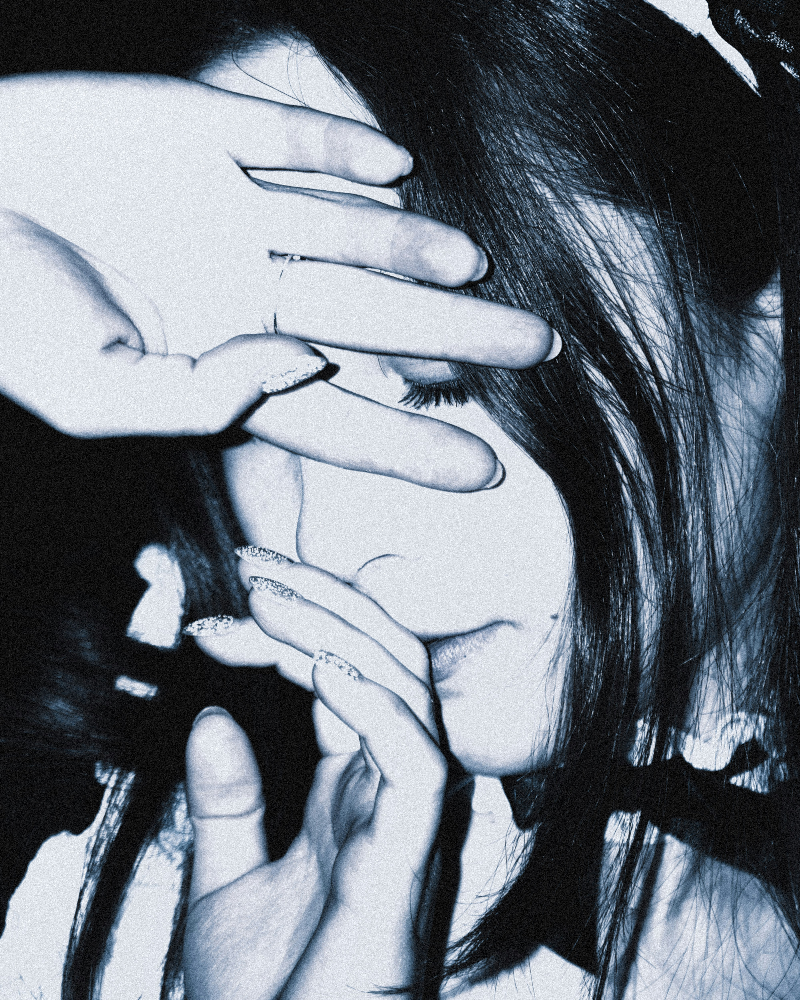

My Gaze Archive
Midnight Sun
Born This Way
Say So
Why
Born This Way
(05)
Lady Gaga의 노래 'Born This Way'에서 영감받은 사진들 — 다양성.
Leather & Smoke
Alexander Eriksson · Unsplash
Stiletto Nails
David Banjo · Unsplash
Painted Nails
Dwayne Joe · Unsplash

Flash Monochrome
Max Ovcharenko · Unsplash
Frame of Nails
Osarugue Igbinoba · Unsplash
Previous
Midnight Sun
Next
Say So
Close
Prev
Next